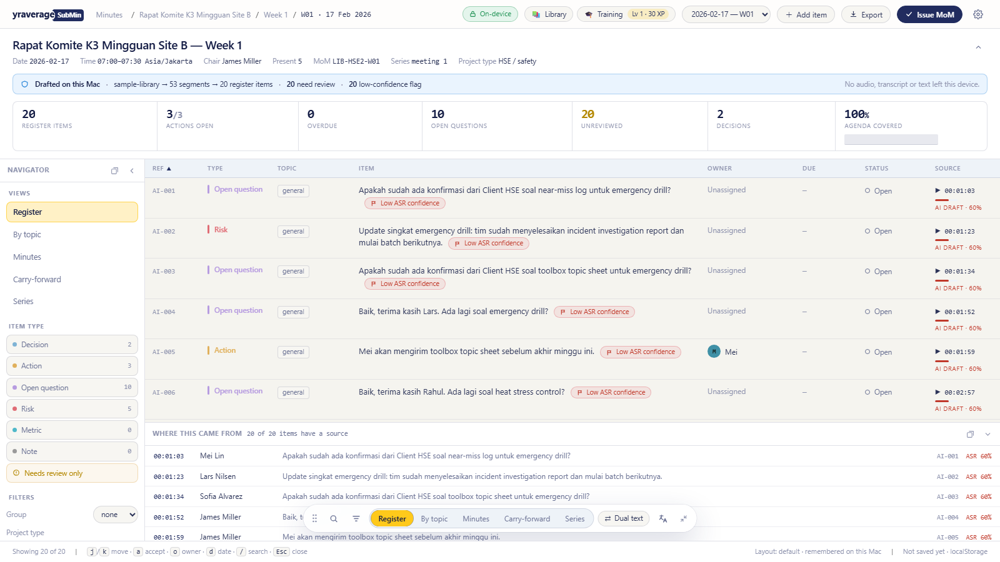
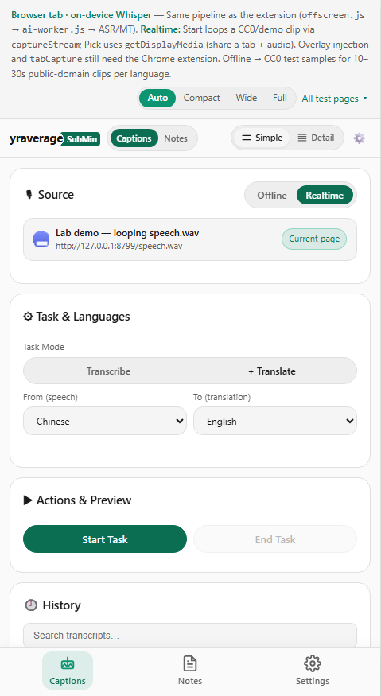
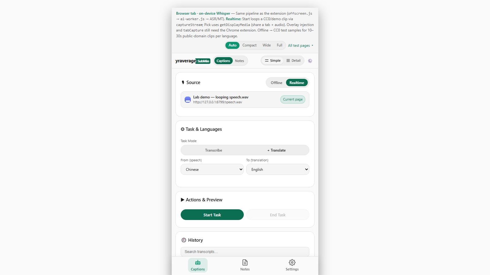
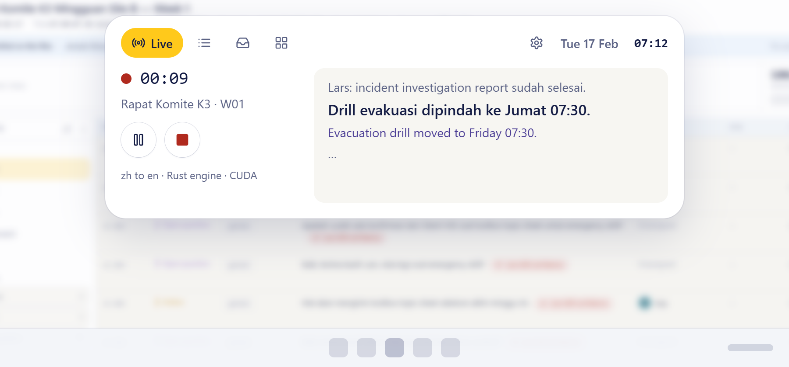

yravgSubMeetly: island, add-ins, threads, quieter pages
Design before code for docs/roadmap/submeetly-next.md. De-slop boards show the real app (Before) and the redraw (After) in the app’s own tokens. Island boards fork Oyenza Studio’s pill and add-on system; thread boards bring Threadbear’s ideas to meetings. Sample data comes from the sample library (series LIB-HSE2) and is labelled sample.
DE-SLOP
Minutes register, side panel and lab shell, quieter. Same controls, fewer boxes.
D01 · D02 · D03
ISLAND
Oyenza Studio’s island and pill, painted in our tokens, with meeting pages and add-ins.
I01 · I02 · I03 · I04 · I05 · I06 · I07 · I08
THREADS
Threadbear ideas for meetings: inbox zero, librarian, options.
T01 · T02 · T03 · T04 · T05
ENGINE
The Rust engine (candle) made visible where people check the helper.
E01
Story sources: S1–S11 = steps in docs/roadmap/submeetly-next.md. References: Oyenza Studio (github.com/lucacadalora/oyenza-studio, MIT code only) and Threadbear (github.com/mikecann/threadbear, MIT). Reference frames are kept out of git.
Status
| BOARD | TITLE | STATUS | LIVES IN | STORIES |
|---|---|---|---|---|
| D01 | Minutes register, quieter | open (drawn, not built) | Extension tab · Minutes · Register view | D01-1, D01-2, D01-3, D01-4 |
| D02 | Side panel: every control, one place each | open (drawn, not built) | Chrome side panel · Captions, Notes, History, Helper, Settings | D02-1, D02-2, D02-3, D02-4, D02-5, D02-6 |
| D03 | Lab shell: four tabs, nothing deleted | open (drawn, not built) | http://127.0.0.1:8799/app.html | D03-1, D03-2, D03-3, D03-4 |
| I01 | Pill at the top: idle, live, recording | open (drawn, not built) | Top centre of the screen, above every window | I01-1, I01-2, I01-3, I01-4 |
| I02 | Island open: Live | open (drawn, not built) | Island › Live tab | I02-1, I02-2, I02-3, I02-4 |
| I03 | Island open: Meeting (decisions as buttons) | open (drawn, not built) | Island › Meeting tab | I03-1, I03-2 |
| I04 | Island open: Inbox across meetings | open (drawn, not built) | Island › Inbox tab | I04-1 |
| I05 | Add-ins for meetings | open (drawn, not built) | Island › Add-ins | I05-1, I05-2, I05-3 |
| I06 | Add-ins: Agenda timer and Talk time | open (drawn, not built) | Island › Timer, Talk time | I06-1, I06-2 |
| I07 | Add-in: Engine monitor | open (drawn, not built) | Island › Engine | I07-1 |
| I08 | Island settings and our look | open (drawn, not built) | Island › Settings | I08-1, I08-2, I08-3, I08-4 |
| T01 | Inbox zero for actions and questions | open (drawn, not built) | Minutes › Inbox (new view) | T01-1, T01-2, T01-3 |
| T02 | Librarian files meetings into projects | open (drawn, not built) | Minutes › Projects | T02-1, T02-2 |
| T03 | Draft options side by side | open (drawn, not built) | Minutes › End & draft | T03-1, T03-2, T03-3 |
| T04 | Meeting highlights: needs you, files, links, changes | open (drawn, not built) | Minutes › Meeting › Highlights (new tab) | T04-1, T04-2 |
| T05 | Add-ins: what each may read and do | open (drawn, not built) | Side panel › Settings › Add-ins (new) | T05-1, T05-2 |
| E01 | Helper card names the Rust engine | open (drawn, not built) | Side panel › History › Native helper | E01-1, E01-2 |
Minutes register, quieter

Rapat Komite K3 Mingguan Site B – Week 1
20
items in this meeting
- Open questions1050%
- Risks525%
- Actions315%
- Decisions210%
- Actions open
- 3/3
- Overdue
- 0
- Agenda covered
- 100%
- All 7 summary numbers still visible, as one line under the title
- One confidence flag per row, in Source; no duplicate chip in the item text
- Topic “general” shown as plain text, not a pill
- Rows needing review have a 2 px amber left edge
- View dock starts minimised when navigator is open; no view removed
- Coretax paper theme gets the same layout
Side panel: every control, one place each
Before Real capture inside app.html at 1600×900 (side panel column)

Rust engine · CUDAruns on this device
The helper stopped answering. Captions use the browser engine (slower).
Original · zh
Lars: incident investigation report sudah selesai.
Drill evakuasi dipindah ke Jumat 07:30.
Translation · en
Evacuation drill moved to Friday 07:30.
Original
The previous line shows here, dimmed.
Translation
Its translation sits right under it.
Saved to Downloads · Change…
00:01:03 Apakah sudah ada konfirmasi dari Client HSE?
00:01:23 Update singkat emergency drill.
| Stage | Pair | p50 | p95 |
|---|---|---|---|
| draft | zh to en | 485 | 1100 |
Summary: Drill moved to Fri 07:30; Mei and Lars hold two actions.
Needs a transcript and a title. Minutes appear below as items you can accept.
Captions use the browser engine (slower). The helper is not installed or has stopped.
Changing compute restarts the helper. Native models list below.
Whisper, ONNX Runtime, candle, Opus-MT and the other parts listed in the licences card.
A task is running. Changes apply to the next task.
- Every control from Before is present with the same label, on one of five tabs
- Feature map lists all 10 groups and jumps to the tab
- Live transcript on the Captions tab without opening Actions & Preview
- Engine and device named; device switch on the Helper tab
- Colour icons on tinted tiles; no emoji, no sparkle
- Empty, Error, Locked and Needs input drawn
- One tab row by default; Tab rows: One | Two (Settings › General) brings back the second row
- Translation colour setting: indigo default, four other swatches, each 4.5:1 on the card; the live translation line follows
Lab shell: four tabs, nothing deleted
Before Real capture, 1600×900

The current line appears here as it is spoken.
Its translation sits right under it.
Loading /dist/sidepanel.html …
Failed to load /dist/sidepanel.js
10–30 s public-domain clips per language.
Requests to 127.0.0.1:17865 go to the real helper if one is running.
Every request fails like a helper that is not running. Use it to see the fallback to the browser engine.
Answers /health and /engine/device from the fixtures below, no network.
{ "ok": true, "engine": "faster-whisper",
"model": "large-v3-turbo", "device": "cuda",
"platform": "Linux", "ffmpeg": true,
"translate": false }{ "device": "auto", "active": "cuda",
"compute": "float16",
"cuda_available": true,
"supported": true, "applied": true }| Time | Method | Path | Result | Delay |
|---|---|---|---|---|
| 12:04:01 | GET | /health | 200 | 0 ms |
| 12:04:01 | GET | /engine/device | 200 | 0 ms |
| 12:04:09 | POST | /engine/device | 200 | 0 ms |
| Time | Method | Path | Result | Delay |
|---|---|---|---|---|
| 12:04:01 | GET | /health | 200 | 0 ms |
| 12:04:01 | GET | /engine/device | 200 | 0 ms |
| 12:04:09 | POST | /engine/device | 200 | 0 ms |
| 12:05:12 | GET | /health | Failed to fetch | 0 ms |
Browser tab · on-device Whisper — Same pipeline as the extension (offscreen.js → ai-worker.js → ASR/MT). Realtime: Start loops a CC0/demo clip via captureStream; Pick uses getDisplayMedia (share a tab + audio). Overlay injection and tabCapture still need the Chrome extension. Offline → CC0 test samples for 10–30s public-domain clips per language.
Browser tab · on-device Whisper — Same pipeline as the extension (offscreen.js → ai-worker.js → ASR/MT). Realtime: Start loops a CC0/demo clip via captureStream; Pick uses getDisplayMedia (share a tab + audio). Overlay injection and tabCapture still need the Chrome extension. Offline → CC0 test samples for 10–30s public-domain clips per language.
- Developer paragraph reachable in one click, wording unchanged
- Width presets Auto/Compact/Wide/Full unchanged and working
- All 21 test pages reachable: grouped page and the dropdown menu
- Panel frame centred; one wordmark
- Mock helper controls cover mode, latencyMs, failNext and reset
- Empty, Error, Locked and Needs input drawn
Pill at the top: idle, live, recording
Lars: incident investigation report sudah selesai.
Drill evakuasi dipindah ke Jumat 07:30.
Evacuation drill moved to Friday 07:30.
DecisionDrill evakuasi dipindah ke Jumat 07:30
ActionDrill evakuasi dipindah ke Jumat 07:30
QuestionDrill evakuasi dipindah ke Jumat 07:30
Lars: incident investigation report sudah selesai.
Drill evakuasi dipindah ke Jumat 07:30.
Evacuation drill moved to Friday 07:30.
DecisionDrill evakuasi dipindah ke Jumat 07:30
ActionDrill evakuasi dipindah ke Jumat 07:30
QuestionDrill evakuasi dipindah ke Jumat 07:30
Drill evakuasi dipindah ke Jumat 07:30.
Not listening.
Ctrl Alt S to start, or press play.
Last meeting: W52 · 6 decisions, 4 actions
Each add-in stays off until you switch it on. Switching off deletes anything it downloaded.
No add-in downloaded yet. Built-in ones need no download.
From diarised segments, this device only. Last 12 min.
Rust engine · CUDA target · 16 samples, last minute
- Pill floats 8 px under the top edge, centred, click-through outside its shape
- Five states drawn: live, idle, helper offline, mic blocked, needs you
- Hover ring shows the wait (0.22 s by default); the island opens when it is full
- Line ellipsizes; never wraps to two lines in the pill
- Pill never covers a full-screen app (setting, I08)
Oyenza Studio (MIT code; name, logo and character not licensed). Reference only.


Island open: Live
Lars: incident investigation report sudah selesai.
Drill evakuasi dipindah ke Jumat 07:30.
Evacuation drill moved to Friday 07:30.
DecisionDrill evakuasi dipindah ke Jumat 07:30
ActionDrill evakuasi dipindah ke Jumat 07:30
QuestionDrill evakuasi dipindah ke Jumat 07:30
Lars: incident investigation report sudah selesai.
Drill evakuasi dipindah ke Jumat 07:30.
Evacuation drill moved to Friday 07:30.
DecisionDrill evakuasi dipindah ke Jumat 07:30
ActionDrill evakuasi dipindah ke Jumat 07:30
QuestionDrill evakuasi dipindah ke Jumat 07:30
Drill evakuasi dipindah ke Jumat 07:30.
Not listening.
Ctrl Alt S to start, or press play.
Last meeting: W52 · 6 decisions, 4 actions
Each add-in stays off until you switch it on. Switching off deletes anything it downloaded.
No add-in downloaded yet. Built-in ones need no download.
From diarised segments, this device only. Last 12 min.
Rust engine · CUDA target · 16 samples, last minute
- Three-line rhythm: previous, current, translation
- Pause and Stop work on the real session
- Engine and device named in one small line (CUDA is target)
- Language pair visible
- Empty state: “Not listening. Ctrl Alt S to start.”
- Mic blocked and helper offline are told in words

- 0.0Idle pill: wordmark, ready, Ctrl Alt S
- 1.1Captions stream into the pill
- 3.6Hover: the ring fills for 1.5 s (film setting)
- 6.0Island opens on Live
- 8.1Meeting tab
- 9.8Accept a decision; the list closes up
- 12.9Fold back into the pill
- 14.4Idle again
The film uses the slower 1.5 s hover setting so the ring can be seen; the default in the app is 0.22 s. The film shows “Rust engine · CUDA” on Live. That is the target state: the CUDA build is not done yet. The board marks it target. Source: docs/design/island-demo/.
Oyenza Studio (MIT code; name, logo and character not licensed). Reference only.


Island open: Meeting (decisions as buttons)
Lars: incident investigation report sudah selesai.
Drill evakuasi dipindah ke Jumat 07:30.
Evacuation drill moved to Friday 07:30.
DecisionDrill evakuasi dipindah ke Jumat 07:30
ActionDrill evakuasi dipindah ke Jumat 07:30
QuestionDrill evakuasi dipindah ke Jumat 07:30
Lars: incident investigation report sudah selesai.
Drill evakuasi dipindah ke Jumat 07:30.
Evacuation drill moved to Friday 07:30.
DecisionDrill evakuasi dipindah ke Jumat 07:30
ActionDrill evakuasi dipindah ke Jumat 07:30
QuestionDrill evakuasi dipindah ke Jumat 07:30
Drill evakuasi dipindah ke Jumat 07:30.
Not listening.
Ctrl Alt S to start, or press play.
Last meeting: W52 · 6 decisions, 4 actions
Each add-in stays off until you switch it on. Switching off deletes anything it downloaded.
No add-in downloaded yet. Built-in ones need no download.
From diarised segments, this device only. Last 12 min.
Rust engine · CUDA target · 16 samples, last minute
- Only items that need a person are listed
- Accept / Answered / Carry / Assign map to existing register actions
- Hotkey hint visible
- Empty: “Nothing waits on you in this meeting.”
- Issued meeting: read-only with the way to amend
Threadbear (MIT), reference only.


Island open: Inbox across meetings
Lars: incident investigation report sudah selesai.
Drill evakuasi dipindah ke Jumat 07:30.
Evacuation drill moved to Friday 07:30.
DecisionDrill evakuasi dipindah ke Jumat 07:30
ActionDrill evakuasi dipindah ke Jumat 07:30
QuestionDrill evakuasi dipindah ke Jumat 07:30
Lars: incident investigation report sudah selesai.
Drill evakuasi dipindah ke Jumat 07:30.
Evacuation drill moved to Friday 07:30.
DecisionDrill evakuasi dipindah ke Jumat 07:30
ActionDrill evakuasi dipindah ke Jumat 07:30
QuestionDrill evakuasi dipindah ke Jumat 07:30
Drill evakuasi dipindah ke Jumat 07:30.
Not listening.
Ctrl Alt S to start, or press play.
Last meeting: W52 · 6 decisions, 4 actions
Each add-in stays off until you switch it on. Switching off deletes anything it downloaded.
No add-in downloaded yet. Built-in ones need no download.
From diarised segments, this device only. Last 12 min.
Rust engine · CUDA target · 16 samples, last minute
- Open actions, questions and risks across meetings
- Done and Snooze per row
- Inbox-zero state names the next meeting
- Error shows the age of the list, Locked says why
Threadbear (MIT), reference only.


Add-ins for meetings
Lars: incident investigation report sudah selesai.
Drill evakuasi dipindah ke Jumat 07:30.
Evacuation drill moved to Friday 07:30.
DecisionDrill evakuasi dipindah ke Jumat 07:30
ActionDrill evakuasi dipindah ke Jumat 07:30
QuestionDrill evakuasi dipindah ke Jumat 07:30
Lars: incident investigation report sudah selesai.
Drill evakuasi dipindah ke Jumat 07:30.
Evacuation drill moved to Friday 07:30.
DecisionDrill evakuasi dipindah ke Jumat 07:30
ActionDrill evakuasi dipindah ke Jumat 07:30
QuestionDrill evakuasi dipindah ke Jumat 07:30
Drill evakuasi dipindah ke Jumat 07:30.
Not listening.
Ctrl Alt S to start, or press play.
Last meeting: W52 · 6 decisions, 4 actions
Each add-in stays off until you switch it on. Switching off deletes anything it downloaded.
No add-in downloaded yet. Built-in ones need no download.
From diarised segments, this device only. Last 12 min.
Rust engine · CUDA target · 16 samples, last minute
- Seven meeting add-ins, each with one-line purpose and size
- Timer and Quick capture on, the rest off (owner to confirm)
- No account-bound add-in (Oyenza money, health, stocks dropped)
- Off = nothing of it runs
Oyenza Studio (MIT code; name, logo and character not licensed). Reference only.

Add-ins: Agenda timer and Talk time
Lars: incident investigation report sudah selesai.
Drill evakuasi dipindah ke Jumat 07:30.
Evacuation drill moved to Friday 07:30.
DecisionDrill evakuasi dipindah ke Jumat 07:30
ActionDrill evakuasi dipindah ke Jumat 07:30
QuestionDrill evakuasi dipindah ke Jumat 07:30
Lars: incident investigation report sudah selesai.
Drill evakuasi dipindah ke Jumat 07:30.
Evacuation drill moved to Friday 07:30.
DecisionDrill evakuasi dipindah ke Jumat 07:30
ActionDrill evakuasi dipindah ke Jumat 07:30
QuestionDrill evakuasi dipindah ke Jumat 07:30
Drill evakuasi dipindah ke Jumat 07:30.
Not listening.
Ctrl Alt S to start, or press play.
Last meeting: W52 · 6 decisions, 4 actions
Each add-in stays off until you switch it on. Switching off deletes anything it downloaded.
No add-in downloaded yet. Built-in ones need no download.
From diarised segments, this device only. Last 12 min.
Rust engine · CUDA target · 16 samples, last minute
- Ring shows time left on the current agenda item
- Agenda items tick off
- Talk time stays on this device
- No agenda: asks for one (needs-input state)
Oyenza Studio (MIT code; name, logo and character not licensed). Reference only.

Add-in: Engine monitor
Lars: incident investigation report sudah selesai.
Drill evakuasi dipindah ke Jumat 07:30.
Evacuation drill moved to Friday 07:30.
DecisionDrill evakuasi dipindah ke Jumat 07:30
ActionDrill evakuasi dipindah ke Jumat 07:30
QuestionDrill evakuasi dipindah ke Jumat 07:30
Lars: incident investigation report sudah selesai.
Drill evakuasi dipindah ke Jumat 07:30.
Evacuation drill moved to Friday 07:30.
DecisionDrill evakuasi dipindah ke Jumat 07:30
ActionDrill evakuasi dipindah ke Jumat 07:30
QuestionDrill evakuasi dipindah ke Jumat 07:30
Drill evakuasi dipindah ke Jumat 07:30.
Not listening.
Ctrl Alt S to start, or press play.
Last meeting: W52 · 6 decisions, 4 actions
Each add-in stays off until you switch it on. Switching off deletes anything it downloaded.
No add-in downloaded yet. Built-in ones need no download.
From diarised segments, this device only. Last 12 min.
Rust engine · CUDA target · 16 samples, last minute
- CPU, GPU and real-time factor named
- Last-minute sample bars
- Target state marked as target
- Helper offline: bars stop and say why
Oyenza Studio (MIT code; name, logo and character not licensed). Reference only.

Island settings and our look
Lars: incident investigation report sudah selesai.
Drill evakuasi dipindah ke Jumat 07:30.
Evacuation drill moved to Friday 07:30.
DecisionDrill evakuasi dipindah ke Jumat 07:30
ActionDrill evakuasi dipindah ke Jumat 07:30
QuestionDrill evakuasi dipindah ke Jumat 07:30
Lars: incident investigation report sudah selesai.
Drill evakuasi dipindah ke Jumat 07:30.
Evacuation drill moved to Friday 07:30.
DecisionDrill evakuasi dipindah ke Jumat 07:30
ActionDrill evakuasi dipindah ke Jumat 07:30
QuestionDrill evakuasi dipindah ke Jumat 07:30
Drill evakuasi dipindah ke Jumat 07:30.
Not listening.
Ctrl Alt S to start, or press play.
Last meeting: W52 · 6 decisions, 4 actions
Each add-in stays off until you switch it on. Switching off deletes anything it downloaded.
No add-in downloaded yet. Built-in ones need no download.
From diarised segments, this device only. Last 12 min.
Rust engine · CUDA target · 16 samples, last minute
- Two SubMeetly looks + Classic kept
- Pill is the default shape; Notch is the other
- Hover delay 0.22 s by default, matches the dock
- Translation colour: indigo by default, four other swatches, each 4.5:1 on the card
- Hide in full-screen apps on by default
Oyenza Studio (MIT code; name, logo and character not licensed). Reference only.

Inbox zero for actions and questions
Inbox zero
Next meeting: Rapat Komite K3 · W02, Tue 24 Feb 07:00.
Drill evakuasi dipindah ke Jumat 07:30
DecisionOpenFinishedArchivedDrill evakuasi dipindah ke Jumat 07:30; semua kontraktor ikut.
Sudah saya sampaikan ke kontraktor lantai 2.
Edit saved: “Drill evakuasi Jumat 07:30; semua kontraktor ikut.” Kept as decision.
Accept this decision into the register?
Mei Lin · toolbox topic sheet
ActionOpenFinishedArchivedMei akan mengirim toolbox topic sheet sebelum akhir minggu ini.
Carried to W02. Opened 17 Feb is kept, age shows 1 meeting.
Is the toolbox topic sheet sent?
Lars Nilsen · investigation report
ActionOpenFinishedArchivedLars mengirim incident investigation report ke Client HSE hari Rabu.
Draft sudah selesai, tinggal review internal.
Carried to W02, due Fri 20 Feb.
Did the report reach Client HSE?
Client HSE near-miss log confirmation
Open questionOpenFinishedArchivedApakah sudah ada konfirmasi dari Client HSE soal near-miss log untuk emergency drill?
Carried to W02, owner James Miller.
Has Client HSE confirmed the near-miss log?
Heat stress control not reviewed since W51
RiskOpenFinishedArchivedUpdate singkat emergency drill: tim sudah menyelesaikan incident investigation report dan mulai batch berikutnya.
Owner set: Lars Nilsen. Review in W02.
Who owns the heat stress review?
Toolbox topic sheet confirmation
Open questionOpenFinishedArchivedApakah sudah ada konfirmasi dari Client HSE soal toolbox topic sheet untuk emergency drill?
Client HSE setuju, sheet dikirim Jumat.
Noted.
Answered?
- Only open actions, open questions and unowned risks across all meetings
- Left list, thread and detail pane are all visible together
- Open a thread, reply, mark done, archive, restore and undo all work
- Finished threads wait before archive; Archive all has Undo
- Inbox zero names the next meeting
- Normal / Empty / Error / Locked / Needs input all reachable from the switcher
Threadbear (MIT), reference only.

Librarian files meetings into projects
Nothing to confirm
Every meeting is filed. New suggestions appear after End & draft.
Komite K3 Mingguan Site B – W02
SuggestionTo confirmFiledDismissedChanged project type to HSE / general. Filing waits for Accept.
File this meeting as suggested?
Weekly HSE walk Site B
Low matchTo confirmFiledDismissedProject changed to Platform tie-in · EPCI. Filing waits for Accept.
Which project does this meeting belong to?
Platform tie-in kickoff
SuggestionTo confirmFiledDismissedTitle changed to “Platform tie-in coordination”.
File this meeting as suggested?
Komite K3 Mingguan Site B – W01
FiledTo confirmFiledDismissedNoted.
Filed.
- Filing reason shown in words
- Undo and Move always available
- Notes cite item refs
- Unfiled bucket for low-confidence matches
- Runs on this device; nothing sent out
- Pause and resume the librarian; all five states reachable
Threadbear (MIT), reference only.


Draft options side by side
Before Real capture, 1600×900: the register where the single draft lands today
Covers every decision and action in the fewest lines.
The generator stopped after 2 of 3 agenda points. A and C are fine.
Untick an item to leave it out when this draft is used.
Untick an item to leave it out when this draft is used.
Untick an item to leave it out when this draft is used.
- Three drafts from the same transcript, labelled by style, one marked Suggested with its reason
- Pick + note per draft, or “None of these” with a free reply
- Bilingual draft uses the session language pair
- Per-item include and edit on each draft
- Use picked draft writes to the register through addItem
- Empty, Error, Locked and Needs input drawn
Threadbear (MIT), reference only.


Meeting highlights: needs you, files, links, changes
Nothing open
No open meeting. Start captions to open the next one.
Rapat Komite K3 · W01
LiveOpenIssuedClosed04:12 James Drill evakuasi dipindah ke Jumat 07:30; semua kontraktor ikut. Decision
06:40 James Lars mengirim incident investigation report ke Client HSE hari Rabu. Action
01:03 Mei Apakah sudah ada konfirmasi dari Client HSE soal near-miss log? Question
Flagged 07:12 “Mei: toolbox topic sheet” as action AI-005 (draft, 60%).
3 items wait on you in this meeting.
Platform tie-in · P03
YesterdayOpenIssuedClosed02:10 Aji Tie-in window agreed for week 12. Decision
09:40 Dewi Weld procedure approval is still pending. Risk
Owner set: Dewi, due Fri 27 Feb.
2 items wait on you in this meeting.
Toolbox briefing · Site B
IssuedOpenIssuedClosed00:50 Mei Heat stress briefing given to 18 workers. Metric
Noted.
Issued.
- Needs-you items tick off and update counts
- Files, links and changes listed for the open meeting
- Finished meetings can be archived; Undo restores
- Same three panes as the inbox
- All five states reachable
Threadbear (MIT), reference only.
Add-ins: what each may read and do
All add-ins reviewed
Nothing waits on trust. Add a folder to install another.
Flag decision
Action chipNeeds trustEnabledRemovedappliesTo projectType HSE / safety
actions Flag decision → engine /notes (addItem)
badge count of unflagged lines
Noted.
Trusted.
Actions panel
PanelNeeds trustEnabledRemovedappliesTo always
panels page “actions”, items from seriesSummary
when open actions > 0
Manifest shown: 1 panel, 0 hooks, 1 engine route (seriesSummary). Nothing has run.
Trust this add-in to read open actions from the register?
Risk register export
ChangedNeeds trustEnabledRemovedappliesTo seriesId komite-k3
hooks on meeting.end → engine /notes/export
open https://client-hse.example/upload
Diff: + hook meeting.end, + open https://client-hse.example/upload. Nothing has run since the change.
The file changed after you trusted it. It is disabled until you review it.
Glossary sync
BrokenNeeds trustEnabledRemovedappliesTo missing field “always | projectType | series”
hooks on line → run “sync.sh”
Error: hooks.run must name an engine route, not a file. Fix the manifest and reload.
This manifest asks for a shell command, which add-ins cannot run. It is listed but never executed.
- Each add-in lists what it reads and what it may do
- Trust and enable, Review manifest and Remove work per add-in
- Nothing enabled by default except those already on
- Local only, stated in words
- All five states reachable
Threadbear (MIT), reference only.
Helper card names the Rust engine
Helper not installed. Captions use the browser engine (slower). Install helper
- Engine named: Rust · candle
- Device switch Auto / CUDA / CPU (Metal on Mac)
- Model rows show loaded or downloading
- Fallback to browser engine stated
- Error state drawn
Story index
| STORY | SOURCE | STATUS | STORY | BOARD |
|---|---|---|---|---|
| D01-1 | S11 | new | Summary line replaces KPI tile grid | D01 |
| D01-2 | S11 | partial | Single confidence flag per row | D01 |
| D01-3 | S11 | partial | Dock minimised next to navigator | D01 |
| D01-4 | S1 | new | Wordmark yravg + SubMeetly | D01 |
| D02-1 | S11 | new | Listen-to block merges source, mode and languages | D02 |
| D02-2 | S11 | new | Live three-line preview on the Captions tab | D02 |
| D02-3 | S3 | new | Engine and device line, device switch | D02 |
| D02-4 | S11 | partial | One tab row by default, toggle to show two | D02 |
| D02-5 | S3 | partial | Native Helper gets its own tab | D02 |
| D02-6 | S11 | new | Translation colour setting (5 swatches, indigo default) | D02 |
| D03-1 | S11 | new | Lab bar with “How the lab works” replaces the paragraph | D03 |
| D03-2 | S11 | built | Width presets and test-page menu | D03 |
| D03-3 | S11 | new | Test pages grouped by purpose | D03 |
| D03-4 | S11 | new | Mock helper tab over window.__labMock | D03 |
| I01-1 | S6 | new | Pill shape + SubMeetly look | I01 |
| I01-2 | S7 | new | Live line in collapsed pill | I01 |
| I01-3 | S7 | new | Start/stop hotkey | I01 |
| I01-4 | S6 | new | Hover ring, then open | I01 |
| I02-1 | S7 | new | Live page with three-line captions | I02 |
| I02-2 | S7 | new | Pause / Stop from the island | I02 |
| I02-3 | S7 | new | Tabs Live · Meeting · Inbox · Add-ins | I02 |
| I02-4 | S7 | new | Island film (16 s loop) | I02 |
| I03-1 | S9 | new | Decisions and questions as buttons (Threadbear “Decisions”) | I03 |
| I03-2 | S8 | new | Quick capture hotkeys | I03 |
| I04-1 | S9 | new | Inbox page in the island | I04 |
| I05-1 | S8 | new | Add-in list with switches | I05 |
| I05-2 | S8 | new | Glossary per series | I05 |
| I05-3 | S8 | new | Caption style, Drop to transcribe | I05 |
| I06-1 | S8 | new | Agenda timer (from Oyenza Focus) | I06 |
| I06-2 | S8 | new | Talk time | I06 |
| I07-1 | S8 | new | Engine monitor (from Oyenza System) | I07 |
| I08-1 | S6 | new | SubMeetly Look from tokens | I08 |
| I08-2 | S6 | new | Pill default shape | I08 |
| I08-3 | S6 | new | Hover delay setting, 0.22 s default | I08 |
| I08-4 | S6 | new | Translation colour setting (5 swatches, indigo default) | I08 |
| T01-1 | S9 | new | Inbox view across meetings | T01 |
| T01-2 | S9 | new | Finished threads before archive, with Undo | T01 |
| T01-3 | S9 | new | Snooze to next meeting | T01 |
| T02-1 | S9 | new | Auto-file into project + series | T02 |
| T02-2 | S9 | new | Project notes from accepted decisions | T02 |
| T03-1 | S9 | partial | Draft variants compared side by side | T03 |
| T03-2 | S9 | new | Include, edit and note per draft | T03 |
| T03-3 | S9 | new | Diff with accept or reject before the register | T03 |
| T04-1 | S9 | new | Highlights tab on a meeting | T04 |
| T04-2 | S9 | new | Finished meetings archived with Undo | T04 |
| T05-1 | S9 | new | Add-in list with per-add-in permissions | T05 |
| T05-2 | S9 | new | Trust gate before first run | T05 |
| E01-1 | S3 | partial | Helper status card shows engine | E01 |
| E01-2 | S4 | new | candle ASR + translation models | E01 |